3: Multivariate Analysis
In this lesson we will use ‘Multivariate Analysis’ to improve the signal significance of our data sample. This involves training a Boosted Decision Tree (BDT) which can distinguish between signal-like and background-like events. The BDT takes a number of input variables and makes a prediction on whether the event is signal or background.
First we need to load the data which we stored in the previous lesson and import the modules we need:
[1]:
%store -r bkg_df
%store -r mc_df
%store -r data_df
[2]:
import mplhep
import numpy as np
import pandas as pd
import uproot
from matplotlib import pyplot as plt
from sklearn.ensemble import GradientBoostingClassifier
from sklearn.metrics import auc, roc_curve
from sklearn.model_selection import KFold
from xgboost import XGBClassifier
Using a classifier
Rectangular cuts are give good simple selections however you can often get better performance by using a more advanced technique. This generally works by taking adavantage of the corellation between variables. For example if we look in two dimensions, Jpsi_eta and mum_P:
[3]:
plt.scatter(mc_df['mup_PT'], mc_df['mum_PT'], s=1, marker=',', label='Signal')
plt.scatter(bkg_df['mup_PT'], bkg_df['mum_PT'], s=1, marker=',', label='Background')
plt.xlabel('mup_PT')
plt.ylabel('mum_PT')
plt.legend()
/tmp/ipykernel_5375/3035115202.py:1: UserWarning: The pixel maker ',' is not supported on scatter(); using a finite-sized square instead, which is not necessarily 1 pixel in size. Use the square marker 's' instead to suppress this warning.
plt.scatter(mc_df['mup_PT'], mc_df['mum_PT'], s=1, marker=',', label='Signal')
/tmp/ipykernel_5375/3035115202.py:2: UserWarning: The pixel maker ',' is not supported on scatter(); using a finite-sized square instead, which is not necessarily 1 pixel in size. Use the square marker 's' instead to suppress this warning.
plt.scatter(bkg_df['mup_PT'], bkg_df['mum_PT'], s=1, marker=',', label='Background')
[3]:
<matplotlib.legend.Legend at 0x7fbc4b53be60>
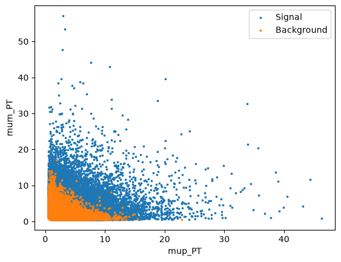
We can see that there if we cut out 2 (or more) dimensional regions we can remove background more effectively. This is the idea behind decision trees.
TODO Add a diagram of a decision tree for the above plot
In machine learning there is a concept known as “boosting” which comes from the question:
Can a set of weak learners create a single strong learner?
I.e. Can a set of bad decision trees be combined to make a single algorithm that has good performance? Luckily the answer is yes and this is known as a boosted ensemable of decision trees. A BDT. (This can also be done with other classifers but BDT’s are popular for solving HEP classification problems.)
This might sound complicated but there is a popular Python package called scikit-learn which makes it easy to do machine learning in Python.
First choose some variables which have good discriminating power for the classifier to use
For this exercise we will use
GradientBoosingClassifierfromscikit-learn
[4]:
training_columns = [
'Jpsi_PT',
'mup_PT', 'mup_eta', 'mup_ProbNNmu',
'mum_PT', 'mum_eta', 'mum_ProbNNmu',
]
# Store training_columns
%store training_columns
Stored 'training_columns' (list)
[5]:
# We then define the classifier we want to use
# bdt = GradientBoostingClassifier() # we could also use this one
bdt = XGBClassifier(n_estimators=20) # less estimator is faster, for demonstration, but 100-300 is usually better
In order to teach the BDT what signal and background look like we have to train it using some reference samples. One of the useful things about scikit-learn is that all classifiers are trained in the same way, by calling the fit(X, y) method. Where X is a 2D array of features and y is the labels (signal/background/other/…).
We need to set the background and signal categories for our data:
[6]:
bkg_df = bkg_df.copy()
bkg_df['catagory'] = 0 # Use 0 for background
mc_df['catagory'] = 1 # Use 1 for signal
[7]:
# Now merge the data together
training_data = pd.concat([bkg_df, mc_df], copy=True, ignore_index=True)
# Store training_data for later
%store training_data
/tmp/ipykernel_5375/2646278291.py:2: Pandas4Warning: The copy keyword is deprecated and will be removed in a future version. Copy-on-Write is active in pandas since 3.0 which utilizes a lazy copy mechanism that defers copies until necessary. Use .copy() to make an eager copy if necessary.
training_data = pd.concat([bkg_df, mc_df], copy=True, ignore_index=True)
Stored 'training_data' (DataFrame)
[8]:
# We can now fit the BDT
bdt.fit(training_data[training_columns], training_data['catagory'])
[8]:
XGBClassifier(base_score=None, booster=None, callbacks=None,
colsample_bylevel=None, colsample_bynode=None,
colsample_bytree=None, device=None, early_stopping_rounds=None,
enable_categorical=True, eval_metric=None, feature_types=None,
feature_weights=None, gamma=None, grow_policy=None,
importance_type=None, interaction_constraints=None,
learning_rate=None, max_bin=None, max_cat_threshold=None,
max_cat_to_onehot=None, max_delta_step=None, max_depth=None,
max_leaves=None, min_child_weight=None, missing=nan,
monotone_constraints=None, multi_strategy=None, n_estimators=20,
n_jobs=None, num_parallel_tree=None, ...)In a Jupyter environment, please rerun this cell to show the HTML representation or trust the notebook. On GitHub, the HTML representation is unable to render, please try loading this page with nbviewer.org.
Parameters
Fitted attributes
| Name | Type | Value |
|---|---|---|
| classes_ | ndarray[int64](2,) | [0,1] |
| feature_importances_ | ndarray[float32](7,) | [0.73,0.06,0.07,...,0.05,0.07,0.01] |
| feature_names_in_ | ndarray[<U12](7,) | ['Jpsi_PT','mup_PT','mup_eta',...,'mum_PT','mum_eta','mum_ProbNNmu'] |
| intercept_ | ndarray[float32](1,) | [0.5] |
| n_classes_ | int | 2 |
| n_features_in_ | int | 7 |
Once a classifier has been trained we can apply it to a dataset to get a variable tells us how signal or background like each candidate is. There are a few different functions to do this, but in this case we will use bdt.predict_proba.
[9]:
bdt.predict_proba(data_df[training_columns].head())
[9]:
array([[0.09381169, 0.9061883 ],
[0.19719899, 0.802801 ],
[0.5873239 , 0.4126761 ],
[0.67302185, 0.32697815],
[0.371399 , 0.628601 ]], dtype=float32)
This has returned a \(N_\text{samples}\) by \(N_\text{classes}\) array. The first column is the ‘probability’ that the candiate is catagory 0 (background) and the second column is the probability that the candidate is catagory 1 (signal). These probabilities sum to 1 for each event are only valid under certain assumptions which typically don’t apply in HEP.
When you have only two classes we typically just use the signal probability and treat it as a continuous variable that is defined between 0 and 1.
[10]:
# We can now use slicing to select column 1 in the array from for all rows
probabilities = bdt.predict_proba(data_df[training_columns])[:,1]
probabilities
[10]:
array([0.9061883 , 0.802801 , 0.4126761 , ..., 0.37715757, 0.22649612,
0.2937255 ], shape=(168385,), dtype=float32)
CHALLENGE: Add a new column to each of mc_df, bkg_df, data_df and training_data called BDT which contains the signal probability of the classifier.
[11]:
mc_df['BDT'] = bdt.predict_proba(mc_df[training_columns])[:,1]
bkg_df['BDT'] = bdt.predict_proba(bkg_df[training_columns])[:,1]
data_df['BDT'] = bdt.predict_proba(data_df[training_columns])[:,1]
training_data['BDT'] = bdt.predict_proba(training_data[training_columns])[:,1]
Alternatively we can avoid copying the same line of code by taking advantage of the fact that dataframes are mutable. This is a good idea as fewer lines of code normally means fewer chances for bugs. In the lines above we could easily mix up the different DataFrame objects which can cause subtle bugs. If it crashes it’s okay, but if you accidenatlly use the wrong dataset somewhere and end up with mistakes in your final result.
[12]:
for df in [mc_df, bkg_df, data_df, training_data]:
df['BDT'] = bdt.predict_proba(df[training_columns])[:,1]
CHALLENGE: Use your plot_comparision function from earlier to compare the BDT response on data and sidebands.
Reload functions from the previous lesson here:
[13]:
def plot_comparision(var, mc_df, bkg_df):
# create histograms
hsig, bins = np.histogram(mc_df[var], bins=60, density=1)
hbkg, bins = np.histogram(bkg_df[var], bins=bins, density=1)
mplhep.histplot((hsig, bins), label='MC Signal', )
mplhep.histplot(hbkg, bins=bins, label='Data Bkg')
plt.xlabel(var)
plt.xlim(bins[0], bins[-1])
plt.legend(loc='best')
def plot_mass(df, **kwargs):
h, bins = np.histogram(df['Jpsi_M'], bins=100, range=[2.75, 3.5])
mplhep.histplot(h, bins, yerr=True, **kwargs) # feel free to adjust
# You can also use LaTeX in the axis label
plt.xlabel('$J/\\psi$ mass [GeV]')
plt.xlim(bins[0], bins[-1])
[14]:
plot_comparision('BDT', mc_df, bkg_df)

We can now choose a cut value and compare it to the selection we used earlier:
[15]:
plot_mass(data_df, label='No cuts', density=1)
data_with_cuts_df = data_df.query('Jpsi_PT > 4')
plot_mass(data_with_cuts_df, label='$J/\\psi$ p$_T$ only', density=1)
data_with_cuts_df = data_df.query('(Jpsi_PT > 4) & ((mum_ProbNNmu > 0.9) & (mup_ProbNNmu > 0.9))')
plot_mass(data_with_cuts_df, label='$J/\\psi$ p$_T$ and muon PID', density=1)
data_with_cuts_df = data_df.query('BDT > 0.95')
plot_mass(data_with_cuts_df, label='Using BDT only', density=1)
plt.legend(loc='best')
[15]:
<matplotlib.legend.Legend at 0x7fbc4afb6450>
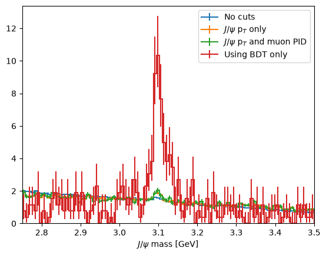
CHALLENGE: Try to find the best possibly cut on your BDT and compare you score to earlier
[16]:
# That would be too nice to use in analysis
from python_lesson import check_truth
check_truth(data_df.query('BDT > 0.95'))
Loading reference dataset, this will take a moment...
Data contains 122 signal events
Data contains 226 background events
Significance metric is 8.58
Evaluating classifier performance
So far we have used a magical function to evalueate the classifier performance. Unfortuanately, we can’t use such a tool when using analysis on real data as that would be too easy! Instead, we have a few other tools we can use to see how good a classifier is.
We have already used one tool: the distributions of the classifier output on signal and background training data.
[17]:
plot_comparision('BDT', mc_df, bkg_df)
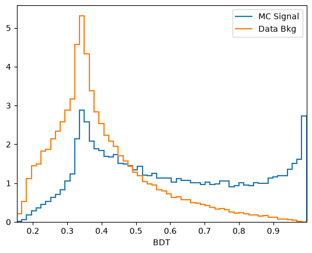
From this you can guess find a cut which removes some background while keeping almost all of the signal signal.
Another tool we have the the Receiver Operating Characteristic curve, also known as the ROC curve. This shows the effiency of the classifier on signal (true positive rate, tpr) against the ineffieicny of removing background (false positive rate, fpr). Each point on this curve corropsonds to a cut value threshold.
To do this we can reuse the training data:
[18]:
y_score = bdt.predict_proba(training_data[training_columns])[:,1]
fpr, tpr, thresholds = roc_curve(training_data['catagory'], y_score)
We can make the plot look nicer by:
Adding axis labels
Forcing the grid to be square
Adding a line which corrosponds to randomly guessing
If the ROC curve goes close to or below this gray line it means the classifier is really bad!!!
[19]:
plt.plot([0, 1], [0, 1], color='grey', linestyle='--', label='Randomly guess')
plt.plot(fpr, tpr, label=f'ROC curve')
plt.xlim(0.0, 1.0)
plt.ylim(0.0, 1.0)
plt.xlabel('False Positive Rate')
plt.ylabel('True Positive Rate')
plt.legend(loc='lower right')
# We can make the plot look nicer by forcing the grid to be square
plt.gca().set_aspect('equal', adjustable='box')
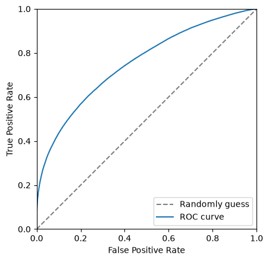
The closer to the top left corner this curve the better the classifier is, another way of looking at this is the area under this curve. Let’s add this it to the legend.
[20]:
area = auc(fpr, tpr)
[21]:
plt.plot([0, 1], [0, 1], color='grey', linestyle='--')
plt.plot(fpr, tpr, label=f'ROC curve (area = {area:.2f})')
plt.xlim(0.0, 1.0)
plt.ylim(0.0, 1.0)
plt.xlabel('False Positive Rate')
plt.ylabel('True Positive Rate')
plt.legend(loc='lower right')
# We can make the plot look nicer by forcing the grid to be square
plt.gca().set_aspect('equal', adjustable='box')
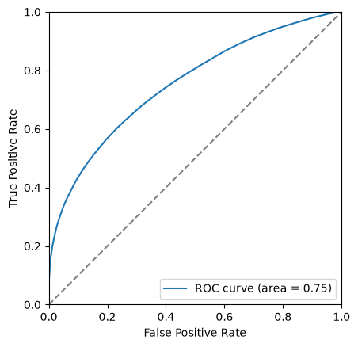
Another thing we can consider is the significance of the signal. Multiple different metrics can be used for this but the most popular generanl purpose metric is \(\frac{S}{\sqrt{S+B}}\), where \(S\) is the number of signal events and \(B\) is the number of background events. It is important to be careful when defining \(S\) and \(B\) so that is is only includes the number of events under the signal peak. This is often done by taking a range such within \(\pm 2 \sigma\) of the peak.
For the toy dataset used here appropriate numbers are:
[22]:
n_sig = 1200
n_bkg = 23000
We can use these numbers to plot the significance as a function of cut value. The number of signal events after the cut, \(S\) is \(N_\text{sig} \times \text{true positive rate}\). The number of background events after the cut, \(B\) is \(N_\text{bkg} \times \text{false positive rate}\).
[23]:
S = n_sig*tpr
B = n_bkg*fpr
metric = S/np.sqrt(S+B)
/tmp/ipykernel_5375/4020814425.py:3: RuntimeWarning: invalid value encountered in divide
metric = S/np.sqrt(S+B)
Then plots this as a function of the cut value
[24]:
plt.plot(thresholds, metric)
plt.xlabel('BDT cut value')
plt.ylabel('$\\frac{S}{\\sqrt{S+B}}$')
plt.xlim(0, 1.0)
[24]:
(0.0, 1.0)
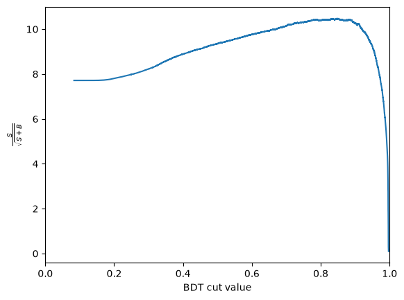
CHALLENGE: Get the cut value corrosponding to the peak of this curve and plot the mass peak for that cut value
[25]:
optimal_index = np.argmax(metric)
optimal_metric = metric[optimal_index]
optimal_cut = thresholds[optimal_index]
print(f'The optimal cut value is {optimal_cut:.2f} with and S/sqrt(S+B) of {optimal_metric:.2f}')
The optimal cut value is inf with and S/sqrt(S+B) of nan
[26]:
plot_mass(data_df, label='No cuts', density=1)
data_with_cuts_df = data_df.query(f'BDT > {optimal_cut}')
plot_mass(data_with_cuts_df, label='Using BDT only', density=1)
plt.legend(loc='best')
/usr/share/miniconda/envs/analysis-essentials/lib/python3.12/site-packages/mplhep/_utils.py:1104: RuntimeWarning: divide by zero encountered in divide
return self.flat_scale(1 / (widths * np.sum(self.values())))
/usr/share/miniconda/envs/analysis-essentials/lib/python3.12/site-packages/mplhep/_utils.py:1081: RuntimeWarning: invalid value encountered in multiply
self._values *= scale
/usr/share/miniconda/envs/analysis-essentials/lib/python3.12/site-packages/mplhep/_utils.py:1082: RuntimeWarning: invalid value encountered in multiply
self.yerr_lo *= scale
/usr/share/miniconda/envs/analysis-essentials/lib/python3.12/site-packages/mplhep/_utils.py:1083: RuntimeWarning: invalid value encountered in multiply
self.yerr_hi *= scale
[26]:
<matplotlib.legend.Legend at 0x7fbc4afbf350>
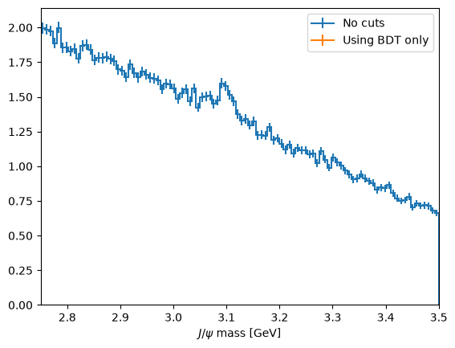
[27]:
plot_mass(data_with_cuts_df, label='Using BDT only')
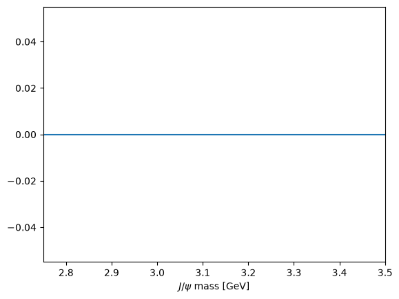
Collecting it all together
Let’s define some helpful functions that we use later based on what we did above:
[28]:
def plot_roc(bdt, training_data, training_columns, label=None):
y_score = bdt.predict_proba(training_data[training_columns])[:,1]
fpr, tpr, thresholds = roc_curve(training_data['catagory'], y_score)
area = auc(fpr, tpr)
plt.plot([0, 1], [0, 1], color='grey', linestyle='--')
if label:
plt.plot(fpr, tpr, label=f'{label} (area = {area:.2f})')
else:
plt.plot(fpr, tpr, label=f'ROC curve (area = {area:.2f})')
plt.xlim(0.0, 1.0)
plt.ylim(0.0, 1.0)
plt.xlabel('False Positive Rate')
plt.ylabel('True Positive Rate')
plt.legend(loc='lower right')
# We can make the plot look nicer by forcing the grid to be square
plt.gca().set_aspect('equal', adjustable='box')
[29]:
def plot_significance(bdt, training_data, training_columns, label=None):
y_score = bdt.predict_proba(training_data[training_columns])[:,1]
fpr, tpr, thresholds = roc_curve(training_data['catagory'], y_score)
n_sig = 1200
n_bkg = 23000
S = n_sig*tpr
B = n_bkg*fpr
metric = S/np.sqrt(S+B)
plt.plot(thresholds, metric, label=label)
plt.xlabel('BDT cut value')
plt.ylabel('$\\frac{S}{\\sqrt{S+B}}$')
plt.xlim(0, 1.0)
optimal_cut = thresholds[np.argmax(metric)]
plt.axvline(optimal_cut, color='black', linestyle='--')
[30]:
with uproot.open('https://cern.ch/starterkit/data/advanced-python-2018/real_data.root') as datafile:
data_df = datafile['DecayTree'].arrays(library='pd')
with uproot.open('https://cern.ch/starterkit/data/advanced-python-2018/simulated_data.root') as mcfile:
mc_df = mcfile['DecayTree'].arrays(library='pd')
print("Data succesfully loaded")
bkg_df = data_df.query('~(3.0 < Jpsi_M < 3.2)').copy()
for df in [mc_df, data_df, bkg_df]:
df.eval('Jpsi_eta = arctanh(Jpsi_PZ/Jpsi_P)', inplace=True)
df.eval('mup_P = sqrt(mum_PX**2 + mum_PY**2 + mum_PZ**2)', inplace=True)
df.eval('mum_P = sqrt(mum_PX**2 + mum_PY**2 + mum_PZ**2)', inplace=True)
training_columns = [
'Jpsi_PT',
'mup_PT', 'mup_eta', 'mup_ProbNNmu', 'mup_IP',
'mum_PT', 'mum_eta', 'mum_ProbNNmu', 'mum_IP',
]
bkg_df['catagory'] = 0 # Use 0 for background
mc_df['catagory'] = 1 # Use 1 for signal
training_data = pd.concat([bkg_df, mc_df], copy=True, ignore_index=True)
bdt = GradientBoostingClassifier()
bdt.fit(training_data[training_columns], training_data['catagory'])
mc_df['BDT'] = bdt.predict_proba(mc_df[training_columns])[:,1]
bkg_df['BDT'] = bdt.predict_proba(bkg_df[training_columns])[:,1]
data_df['BDT'] = bdt.predict_proba(data_df[training_columns])[:,1]
training_data['BDT'] = bdt.predict_proba(training_data[training_columns])[:,1]
plt.figure()
plot_comparision('BDT', mc_df, bkg_df)
plt.figure()
plot_significance(bdt, training_data, training_columns)
plt.figure()
plot_roc(bdt, training_data, training_columns)
Data succesfully loaded
/tmp/ipykernel_5375/2566643064.py:10: Pandas4Warning: The inplace keyword in DataFrame.eval is deprecated and will be removed in a future version (PDEP-8).
See https://pandas.pydata.org/docs/dev/whatsnew/v3.1.0.html#deprecation-inplace for more details.
df.eval('Jpsi_eta = arctanh(Jpsi_PZ/Jpsi_P)', inplace=True)
/tmp/ipykernel_5375/2566643064.py:11: Pandas4Warning: The inplace keyword in DataFrame.eval is deprecated and will be removed in a future version (PDEP-8).
See https://pandas.pydata.org/docs/dev/whatsnew/v3.1.0.html#deprecation-inplace for more details.
df.eval('mup_P = sqrt(mum_PX**2 + mum_PY**2 + mum_PZ**2)', inplace=True)
/tmp/ipykernel_5375/2566643064.py:12: Pandas4Warning: The inplace keyword in DataFrame.eval is deprecated and will be removed in a future version (PDEP-8).
See https://pandas.pydata.org/docs/dev/whatsnew/v3.1.0.html#deprecation-inplace for more details.
df.eval('mum_P = sqrt(mum_PX**2 + mum_PY**2 + mum_PZ**2)', inplace=True)
/tmp/ipykernel_5375/2566643064.py:10: Pandas4Warning: The inplace keyword in DataFrame.eval is deprecated and will be removed in a future version (PDEP-8).
See https://pandas.pydata.org/docs/dev/whatsnew/v3.1.0.html#deprecation-inplace for more details.
df.eval('Jpsi_eta = arctanh(Jpsi_PZ/Jpsi_P)', inplace=True)
/tmp/ipykernel_5375/2566643064.py:11: Pandas4Warning: The inplace keyword in DataFrame.eval is deprecated and will be removed in a future version (PDEP-8).
See https://pandas.pydata.org/docs/dev/whatsnew/v3.1.0.html#deprecation-inplace for more details.
df.eval('mup_P = sqrt(mum_PX**2 + mum_PY**2 + mum_PZ**2)', inplace=True)
/tmp/ipykernel_5375/2566643064.py:12: Pandas4Warning: The inplace keyword in DataFrame.eval is deprecated and will be removed in a future version (PDEP-8).
See https://pandas.pydata.org/docs/dev/whatsnew/v3.1.0.html#deprecation-inplace for more details.
df.eval('mum_P = sqrt(mum_PX**2 + mum_PY**2 + mum_PZ**2)', inplace=True)
/tmp/ipykernel_5375/2566643064.py:10: Pandas4Warning: The inplace keyword in DataFrame.eval is deprecated and will be removed in a future version (PDEP-8).
See https://pandas.pydata.org/docs/dev/whatsnew/v3.1.0.html#deprecation-inplace for more details.
df.eval('Jpsi_eta = arctanh(Jpsi_PZ/Jpsi_P)', inplace=True)
/tmp/ipykernel_5375/2566643064.py:11: Pandas4Warning: The inplace keyword in DataFrame.eval is deprecated and will be removed in a future version (PDEP-8).
See https://pandas.pydata.org/docs/dev/whatsnew/v3.1.0.html#deprecation-inplace for more details.
df.eval('mup_P = sqrt(mum_PX**2 + mum_PY**2 + mum_PZ**2)', inplace=True)
/tmp/ipykernel_5375/2566643064.py:12: Pandas4Warning: The inplace keyword in DataFrame.eval is deprecated and will be removed in a future version (PDEP-8).
See https://pandas.pydata.org/docs/dev/whatsnew/v3.1.0.html#deprecation-inplace for more details.
df.eval('mum_P = sqrt(mum_PX**2 + mum_PY**2 + mum_PZ**2)', inplace=True)
/tmp/ipykernel_5375/2566643064.py:22: Pandas4Warning: The copy keyword is deprecated and will be removed in a future version. Copy-on-Write is active in pandas since 3.0 which utilizes a lazy copy mechanism that defers copies until necessary. Use .copy() to make an eager copy if necessary.
training_data = pd.concat([bkg_df, mc_df], copy=True, ignore_index=True)
/tmp/ipykernel_5375/4278176416.py:9: RuntimeWarning: invalid value encountered in divide
metric = S/np.sqrt(S+B)
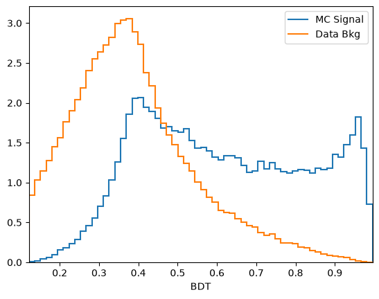
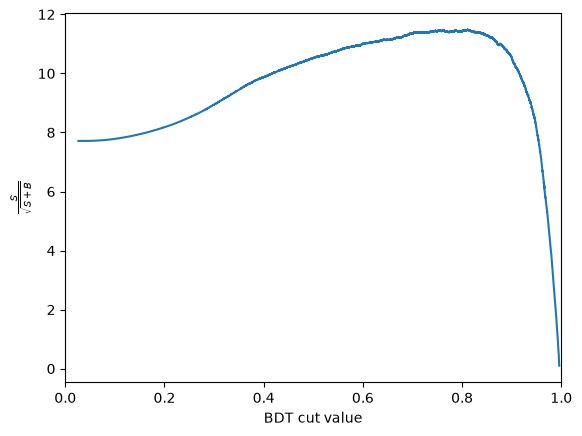
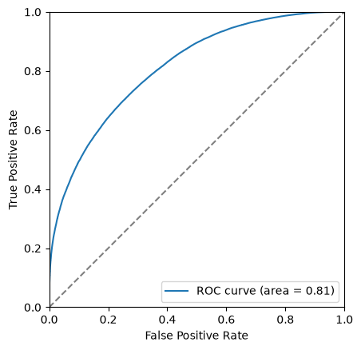
[31]:
%store bkg_df
%store mc_df
%store data_df
Stored 'bkg_df' (DataFrame)
Stored 'mc_df' (DataFrame)
Stored 'data_df' (DataFrame)
[ ]: